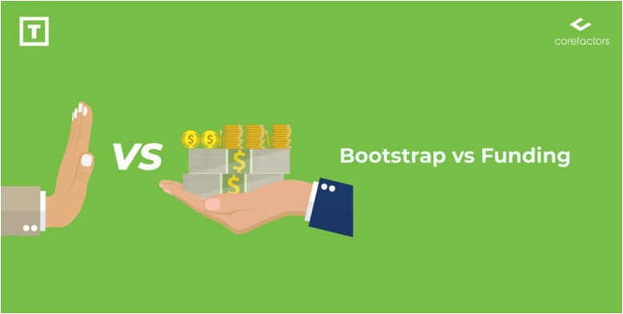

Bootstrapping vs. Fundraising: Choosing the Right Path for Your Startup’s Success
Mon Nov 11 2024
Bootstrapping vs. Fundraising: Choosing the Right Path for Your Startup’s Success
Imagine standing at a crossroads, with your dream startup waiting to take flight.
On one side lies bootstrapping—a journey of independence and grit. On the other,
fundraising—a fast track to scaling big and bold. The choice you make will shape
your startup's story, but how do you decide which path is right for you?
Bootstrapping: A test of resilience
Bootstrapping is the ultimate test of your entrepreneurial mettle. It's about using
your savings, reinvesting early profits, and stretching every rupee (or dollar!) to
build your dream. The beauty of this approach lies in control—every decision,
every pivot, every milestone is yours alone. Founders who bootstrap are often seen
as resourceful and fiercely committed, their businesses growing organically at a
pace they dictate.
Take the example of Zoho, which has carved out a global reputation without ever
seeking external funding. By relying on profits and a relentless focus on customer
needs, they’ve built a thriving empire. But it’s not all smooth sailing.
Bootstrapping can feel like walking a tightrope; with limited funds, every step
matters, and the risk of burnout looms large.
Fundraising: Accelerating the Dream
If bootstrapping is a marathon, fundraising is a sprint. Securing external
funding—whether from angel investors, venture capitalists, or even
crowdfunding—injects your startup with the capital to grow quickly. This approach
is particularly beneficial for businesses that need significant upfront investment or
are in highly competitive markets.
Consider Flipkart’s meteoric rise—fundraising enabled them to dominate the
e-commerce space, scale operations, and attract top talent. But fundraising comes
with strings attached. Investors expect returns, often in the form of equity and
decision-making influence. It’s like having a co-pilot—valuable, but only if you’re
aligned on the destination.
Making the Choice
So, how do you decide? Start by asking yourself three key questions:
1. What does your business need? If it’s a tech-heavy product or a
fast-moving market, fundraising might be a necessity. If you can start lean
and grow steadily, bootstrapping could be your best bet.
2. How much control are you willing to give up? If the thought of answering
to investors doesn’t sit well with you, bootstrapping might be more
appealing.
3. What’s your risk tolerance? Bootstrapping puts your own finances on the
line, while fundraising spreads the financial risk but adds performance
pressure.
Both paths have their merits, but the key to success lies in aligning your funding
strategy with your vision and goals. Whether you choose the independent grind of
bootstrapping or the high-speed growth of fundraising, remember that there’s no
single formula for building a successful business. What truly matters is staying
adaptable, resilient, and focused on creating value. The journey will be uniquely
yours—and that’s what makes it worth it. So, which path will you carve to bring
your dream to life?
-By Sarthak Tripathi
Operations Executive E-CELL